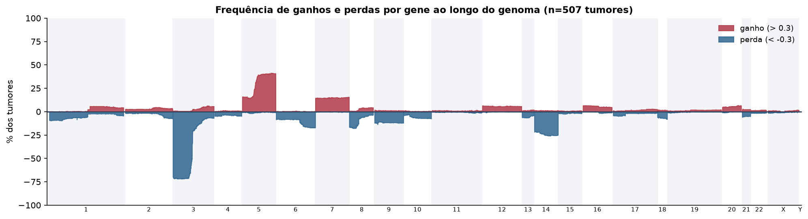
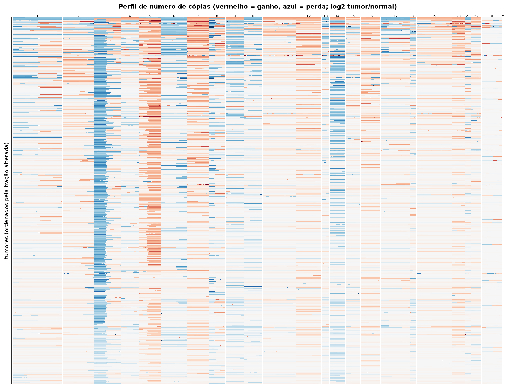
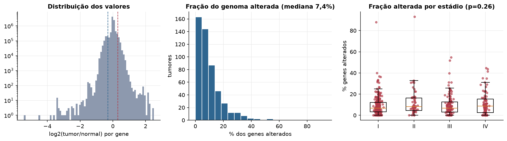
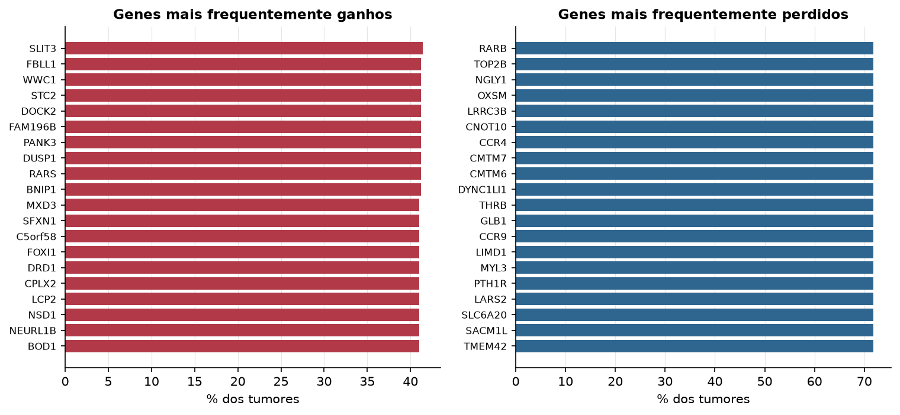

KIRC · Número de cópias (CNV)
Affymetrix SNP6, segmentos whitelisted do PanCanAtlas · gerado em 21/10/2026 22:42
507tumores
17.738genes
7,4%fração alterada mediana
75segmentos/tumor (mediana)
Fonte: SNP6 whitelisted (PanCanAtlas); nível de gene calculado dos segmentos (hg19)
O valor por gene é o do segmento que cobre o meio do gene (log2 tumor/normal, hg19). Sem correção de pureza e ploidia: tumores com pouca célula tumoral têm valores atenuados. Para chamadas discretas (−2 a 2), use o GISTIC2 do PanCanAtlas ou o ABSOLUTE.
Principais resultados
- Mediana de 7,4% dos genes com ganho ou perda por tumor (limiares log2 de 0.3 e -0.3).
- O cromossomo com mais ganhos em média é o 5 (29,8% dos tumores por gene) e o com mais perdas é o 3 (38,4%).
- Genes mais ganhos: SLIT3 (41%), FBLL1 (41%), WWC1 (41%), STC2 (41%), DOCK2 (41%), FAM196B (41%). Genes mais perdidos: RARB (72%), TOP2B (72%), NGLY1 (72%), OXSM (72%), LRRC3B (72%), CNOT10 (72%).
- Fração alterada por estádio: Kruskal-Wallis p=0.26.
Paisagem ao longo do genoma


Carga de alterações

Genes recorrentes

Top 25 genes por frequência de ganho
| gene | chrom | % ganho | % perda | média log2 |
|---|---|---|---|---|
| SLIT3 | 5 | 41.4 | 0.6 | 0.226 |
| FBLL1 | 5 | 41.2 | 0.6 | 0.225 |
| WWC1 | 5 | 41.2 | 0.6 | 0.225 |
| STC2 | 5 | 41.2 | 0.6 | 0.228 |
| DOCK2 | 5 | 41.2 | 0.6 | 0.226 |
| FAM196B | 5 | 41.2 | 0.6 | 0.226 |
| PANK3 | 5 | 41.2 | 0.6 | 0.225 |
| DUSP1 | 5 | 41.2 | 0.6 | 0.227 |
| RARS | 5 | 41.2 | 0.8 | 0.224 |
| BNIP1 | 5 | 41.2 | 0.6 | 0.228 |
| MXD3 | 5 | 41 | 0.8 | 0.226 |
| SFXN1 | 5 | 41 | 0.6 | 0.227 |
| C5orf58 | 5 | 41 | 0.6 | 0.226 |
| FOXI1 | 5 | 41 | 0.6 | 0.226 |
| DRD1 | 5 | 41 | 0.6 | 0.227 |
| CPLX2 | 5 | 41 | 0.6 | 0.227 |
| LCP2 | 5 | 41 | 0.6 | 0.226 |
| NSD1 | 5 | 41 | 0.8 | 0.226 |
| NEURL1B | 5 | 41 | 0.6 | 0.227 |
| BOD1 | 5 | 41 | 0.6 | 0.227 |
| NKX2-5 | 5 | 41 | 0.6 | 0.228 |
| SNORA74B | 5 | 41 | 0.6 | 0.227 |
| ATP6V0E1 | 5 | 41 | 0.6 | 0.227 |
| RPL26L1 | 5 | 41 | 0.6 | 0.227 |
| CPEB4 | 5 | 41 | 0.6 | 0.227 |
Top 25 genes por frequência de perda
| gene | chrom | % ganho | % perda | média log2 |
|---|---|---|---|---|
| RARB | 3 | 0.6 | 71.8 | -0.369 |
| TOP2B | 3 | 0.6 | 71.8 | -0.369 |
| NGLY1 | 3 | 0.6 | 71.8 | -0.369 |
| OXSM | 3 | 0.6 | 71.8 | -0.368 |
| LRRC3B | 3 | 0.6 | 71.8 | -0.369 |
| CNOT10 | 3 | 0.6 | 71.8 | -0.369 |
| CCR4 | 3 | 0.6 | 71.8 | -0.369 |
| CMTM7 | 3 | 0.6 | 71.8 | -0.369 |
| CMTM6 | 3 | 0.6 | 71.8 | -0.369 |
| DYNC1LI1 | 3 | 0.6 | 71.8 | -0.369 |
| THRB | 3 | 0.6 | 71.8 | -0.369 |
| GLB1 | 3 | 0.6 | 71.8 | -0.369 |
| CCR9 | 3 | 0.6 | 71.8 | -0.37 |
| LIMD1 | 3 | 0.6 | 71.8 | -0.37 |
| MYL3 | 3 | 0.6 | 71.8 | -0.369 |
| PTH1R | 3 | 0.6 | 71.8 | -0.369 |
| LARS2 | 3 | 0.6 | 71.8 | -0.37 |
| SLC6A20 | 3 | 0.6 | 71.8 | -0.37 |
| SACM1L | 3 | 0.6 | 71.8 | -0.37 |
| TMEM42 | 3 | 0.6 | 71.8 | -0.37 |
| KIF15 | 3 | 0.6 | 71.8 | -0.37 |
| HHATL | 3 | 0.6 | 71.8 | -0.37 |
| ZBTB47 | 3 | 0.6 | 71.8 | -0.37 |
| NKTR | 3 | 0.6 | 71.8 | -0.37 |
| SS18L2 | 3 | 0.6 | 71.8 | -0.37 |